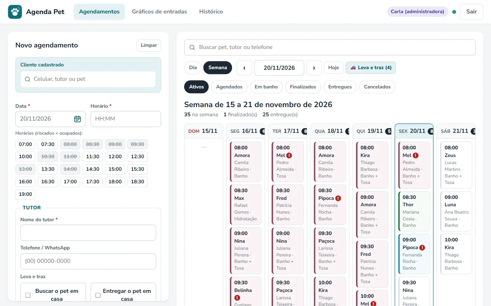
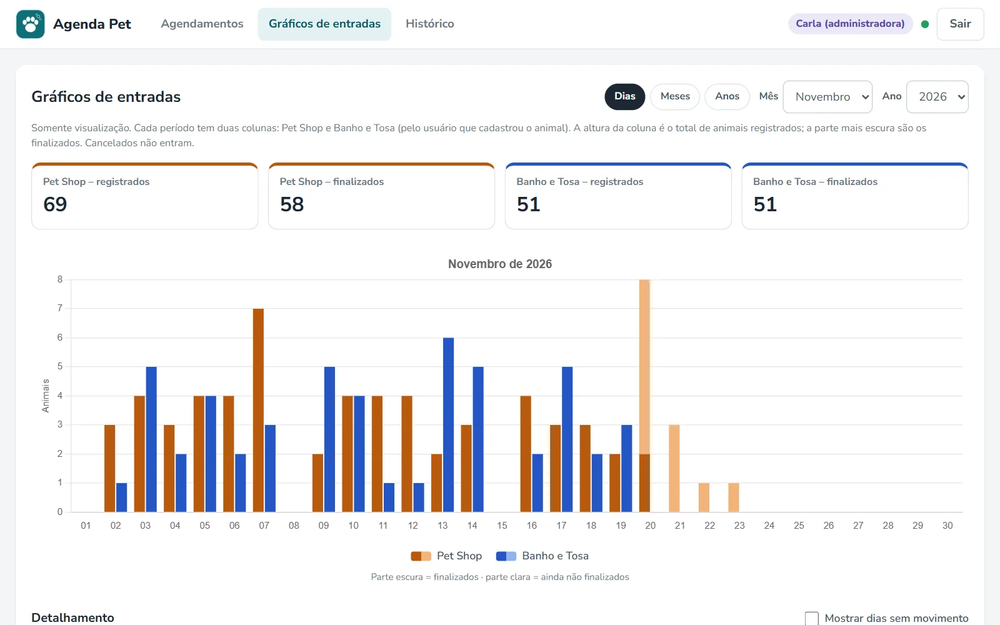
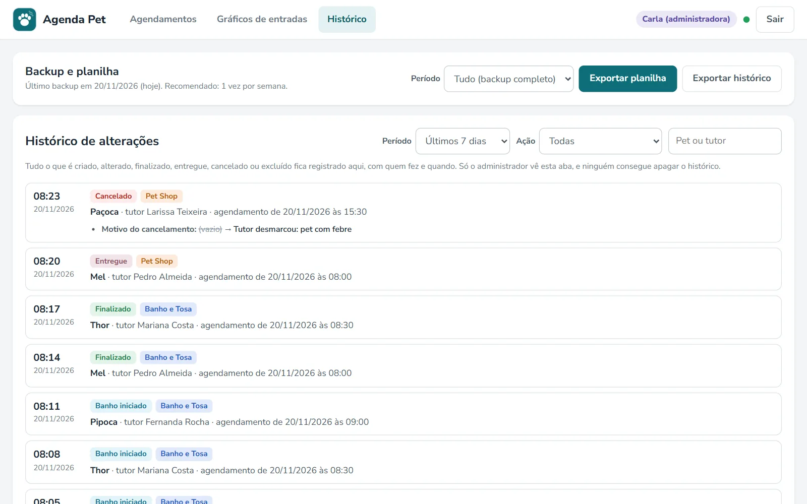
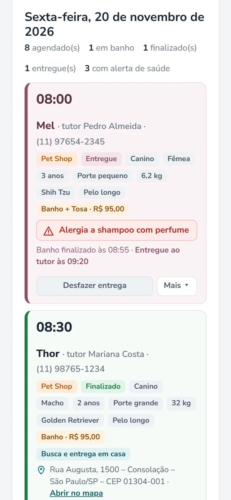
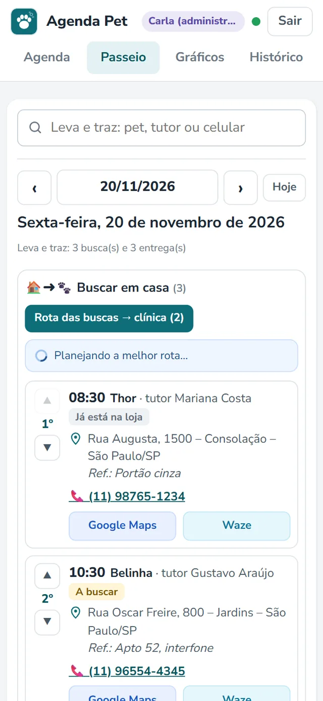
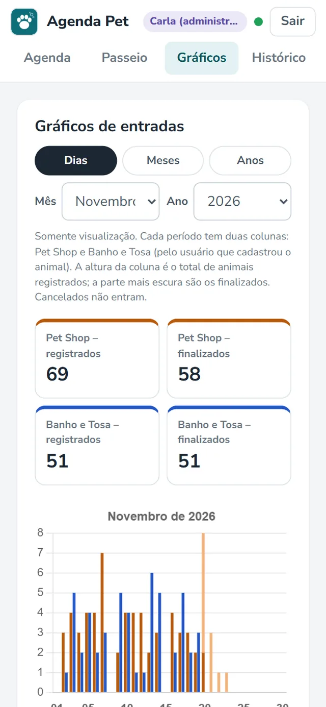

← Todos os projetos
Estudo de caso
Agenda Pet
Agenda compartilhada entre o pet shop e o banho e tosa de uma clínica veterinária. Foi a primeira versão, que depois virou o Banho e Tosa.
- Tipo
- Sistema web sob medida
- Meu papel
- Análise, desenvolvimento e testes
- Plataforma
- Web (PWA), celular e computador
- Banco
- Supabase (PostgreSQL)

O problema
O balcão do pet shop e o banho e tosa marcavam horários em lugares diferentes. Resultado: horário duplicado, tutor ligando para saber se o pet estava pronto e ninguém sabendo quem tinha agendado o quê.
A solução
- Uma agenda só para os dois setores, atualizada em tempo real.
- Cada setor com o seu login e permissões no banco (Row Level Security).
- Aviso no WhatsApp quando o banho termina.
- Leva e traz com rota no Google Maps e aba Passeio no celular.



No celular



Tecnologias
JavaScript, HTML e CSS, Supabase (PostgreSQL, Auth, Realtime, RLS e Edge Functions), Chart.js e Service Worker (PWA).